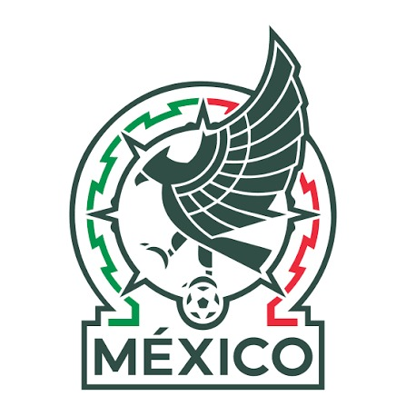

MÉXICO
México es el país donde vivo y tiene una gran variedad de culturas
CULTURAS
las culturas de México son variadas desde la antigüedad y gracias a los diferentes estados que hay un ejemplo podría ser las ofrendas
qué es el tema: es México
por qué lo eligieron; porque es el país donde vivo
qué importancia tiene
para ti: es el lugar donde vivo y me gusta
IMAGEN DE LA SELECCIÓN

lista de características y elementos
- cultura variada
- comidas son variadas
- fútbol Copa América
- 32 estados son grandes
- fauna es diversa
- flora son muchas
segunda lista
es el 14 país más grande del mundo
su capital es CDMX
es famoso por su gastronomía
su independencia fue en 1810
tiene 32 estados
su idioma es español
¿sabías qué?
|es el 14 país más grande del mundo|
|mide 4.5 millones de metros cúbicos|
¿POR QUÉ ELIGIERON EL TEMA?
porque es donde vivo
¿QUÉ ES LO MÁS IMPORTANTE?
es un país en crecimiento
¿QUÉ APRENDIERON AL INVESTIGAR SOBRE MÉXICO?
muchas cosas como que es grande y lleno de cultura